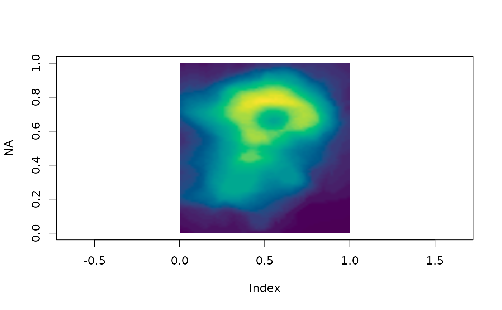

`image_hex()` turns numeric, integer, raw, logical, or character image data into a character matrix of hex colours, ready for [graphics::rasterImage()], writing to PNG/GeoTIFF, or use as a texture. This is the colour engine shared with the 'ximage' package.
image_hex(
x,
col = NULL,
breaks = NULL,
zlim = NULL,
alpha = NULL,
na.col = "transparent"
)character matrix of hex colours
Supported inputs are a matrix (palette mapping via 'col', 'breaks', 'zlim'), a 3D array with 1 band (treated as a matrix), 2 bands (grey + alpha), 3 bands (RGB), or 4 bands (RGBA), a raw matrix or array (converted to integer), and a character matrix of colours (passed through, with NA replaced by 'na.col').
Behaviour guarantees:
Non-finite values (NA, NaN, Inf) always map to 'na.col'. Colour scaling for multi-band data is autodetected per image: data within [0, 1] is used as-is, within [0, 255] is divided by 255, anything else is rescaled by the finite range of the colour bands jointly (so hue relationships are preserved); an alpha band is scaled independently. Constant (zero-range) data maps to the middle of the palette. 'zlim' anchors the palette to an absolute range and values outside it map to 'na.col'; 'zlim' is ignored with a warning for multi-band input. 'alpha' is a constant (or recycled) opacity multiplier in [0, 1] applied on top of any existing alpha.
Use the stretch functions ([stretch_linear()] and friends) to normalize high dynamic range data before colour mapping.
m <- image_hex(volcano)
dim(m)
#> [1] 87 61
## rgb array in 0, 255
arr <- array(c(volcano, volcano / 2, 255 - volcano), c(dim(volcano), 3L))
m <- image_hex(arr)
## plot it
plot(NA, xlim = c(0, 1), ylim = c(0, 1), asp = 1)
rasterImage(image_hex(volcano, col = grDevices::hcl.colors(64)), 0, 0, 1, 1)
